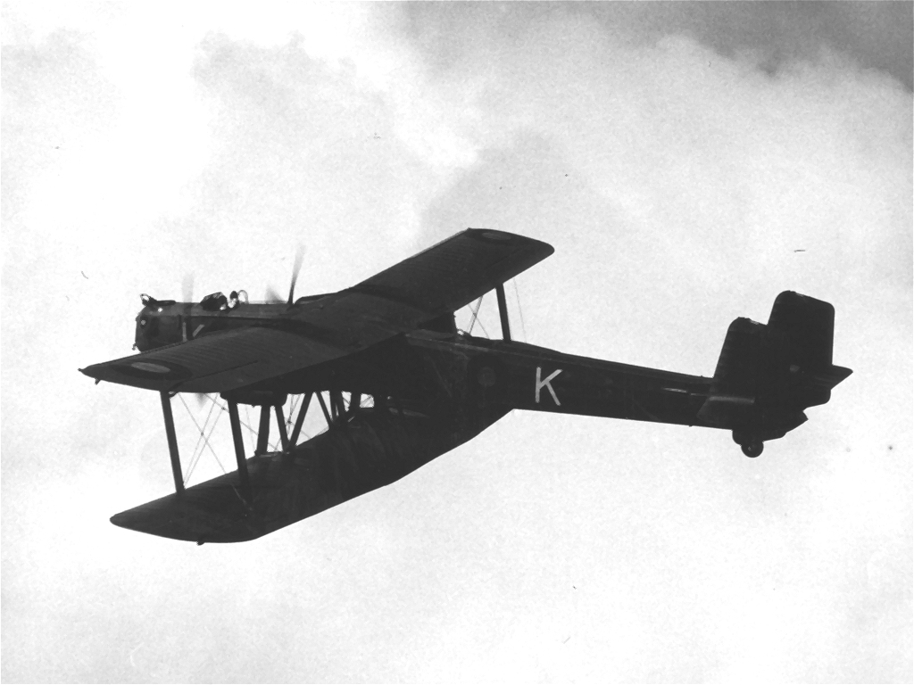
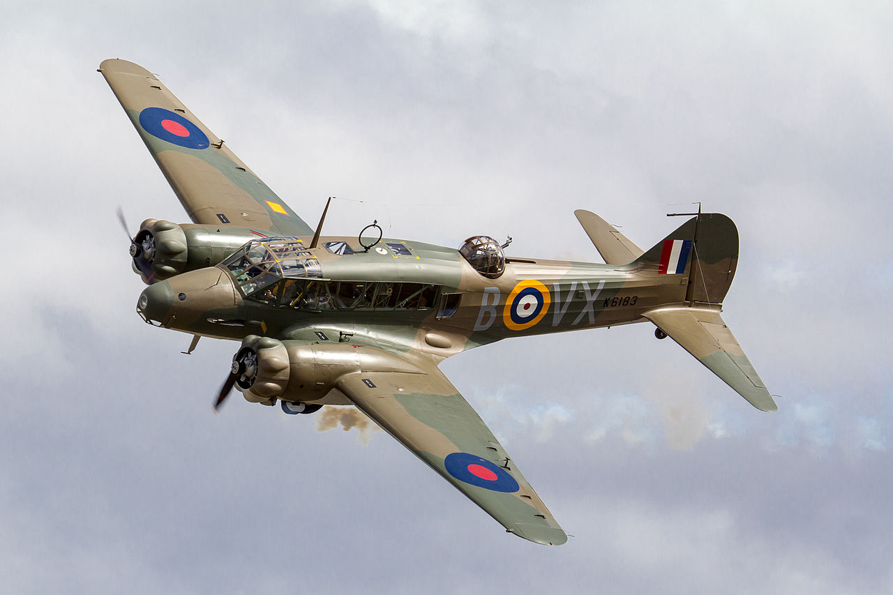
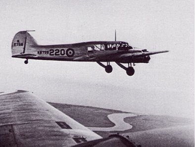
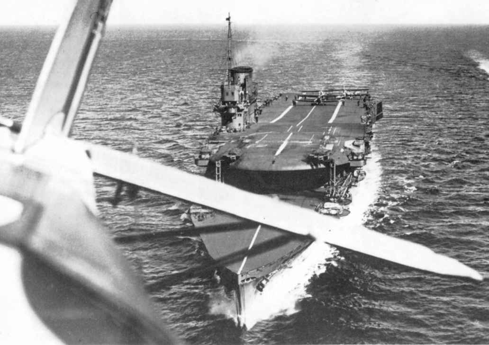
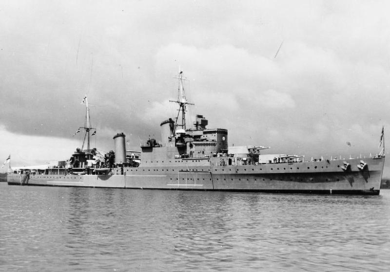
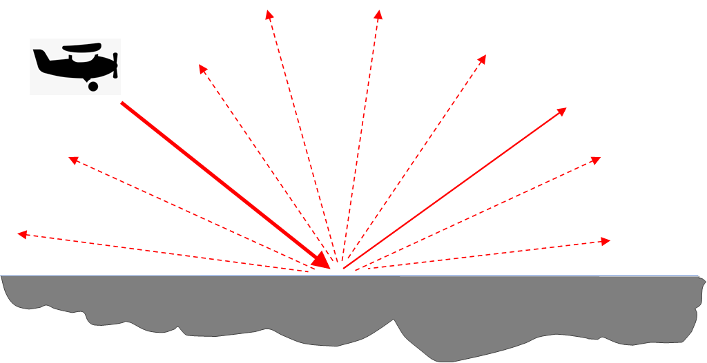
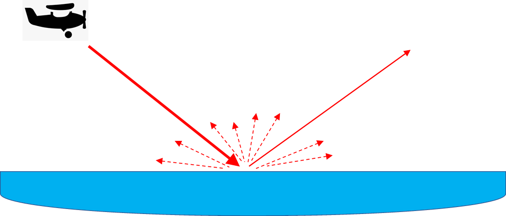
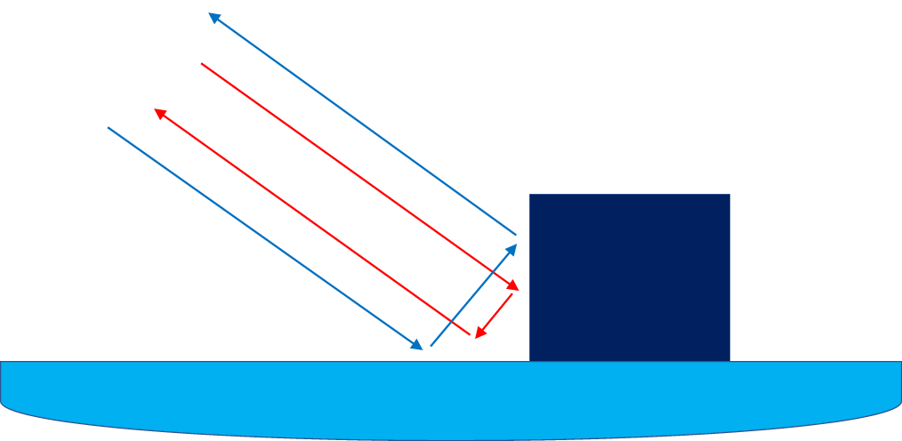

레이더 개발 이야기 (22) - 우연히 잡힌 신호
게시: 2023-02-23T06:30:35+09:00
<우연히 잡은 신호가 전쟁의 결과를 바꾸다> 야간 전투기를 위한 공대공 레이더를 만들고 테스트하던 영국 공군 개발팀은 1937년 3월 Western Electric Type 316A 진공관을 이용하여 1.25m 길이의 파장을 가진 레이더를 복엽 폭격기 Handley Page Heyford에 장착하고 공중에서 테스트를 수행.

(폭격기 Handley Page Heyford. 최고 속력 220km/h에 최대 폭장량 1.1톤에 불과. 1933년에 도입되었으나 1936년에는 이미 생산 중단.)
혹시나 하고 수행해본 테스트 결과는 역시나 신통치 않았음. 그 진공관에서 만들 수 있는 펄스파의 출력은 불과 100W에 불과했기 때문에 탐지할 수 있는 상대 항공기까지의 거리는 매우 제한적. 다만, 가만 보니 앞에 표적 항공기가 전혀 없는 상태에서도 레이더 스코프에 뭔가 신호가 잡힘. 당시 레이더 스코프는 요즘 레이더 같은 PPI (Plan Position Indiciator)가 아니라 표적까지의 거리만 표시되는 A-scope 였기 때문에 이 신호가 뭔지 처음에는 전혀 짐작을 못했음. 나중에야 그 신호들은 몇 km 남쪽에 있는 Harwich 항구의 부두와 기중기 등이라는 것을 꺠달음. 기타 잡음 신호도 잡혔는데 아무래도 그건 항구 밖의 선박들 같았음. 이 테스트 팀은 혹시 자기들이 공대공 레이더를 만들다가 공대함 레이더를 만든 것 아닌가 싶어 좀더 광범위한 테스트를 해보고 싶었으나, 복엽 폭격기인 헤이포드는 안전 문제 때문에 바다 위를 비행하는 것이 금지되어 있었으므로 추가 테스트를 못함. 하지만 생각하지도 못한 발견에 흥분한 개발팀은 열심히 상부를 졸라 해양 초계기인 Avro Anson을 2대나 얻어내어 여기에 시제품 공대공 레이더, 아니 공대함 레이더를 장착. 하지만 또 문제가 생김. 헤이포드보다 강력했던 아브로 앤슨의 엔진 점화 플러그에서 나오는 신호가 레이더 신호를 방해했던 것. 이 문제를 공군 기술팀이 해결하는데 또 몇 달 걸림. 결국 8월에야 수행한 테스트에서, 도버 해협 위의 선박들을 약 3~4km 거리에서는 잘 탐지해낸다는 것을 확인.

(다목적 항공기 Avro Anson. 수송기이자 정찰기, 초계기, 훈련기 등으로 다양하게 활용됨. 최고 속력 300km/h. 1936년 도입되어 전후에도 여객기로 장기간 사용됨.)
공군 개발팀은 흥분했으나 정작 해군은 심드렁. "아니, 3~4km 거리라면 그냥 눈으로 보지 레이더가 왜 필요하담?" 그러나 이 기술은 곧 독일 해군 비스크마르크를 잡는데 혁혁한 공을 세웠을 뿐만 아니라, 나중에는 cavity magnetron과 결합되면서 WW2 전체의 승패를 좌우하게 됨.

(공대함 레이더 테스트에 사용 중인 2대의 아브로 앤슨)
<로열 에어포스 vs. 로열 네이비 - 공군에게 더 이상 완벽한 하루는 없다> 1937년 9월, 도버 해협에서 로열 네이비가 함대 훈련을 수행할 때 로열 에어포스의 일부 항공기도 참여하게 되어 있었음. 이때 영국 공군 레이더 개발팀의 왓-왓슨은 이 훈련에 이제 막 개발 중이던 ASV (Air-to-Surface Vessel), 즉 공대함 레이더를 동원하기로 함. 9월 3일 훈련에서 ASV 레이더를 장착한 Avro Anson 초계기는 전함 HMS Rodney, 항모 HMS Courageous는 물론, 경순양함 HMS Southhampton까지 뚜렷하게 잡아냄. 다음 날은 ASV 레이더의 유용함에 대해 거의 완벽한 데모가 벌어짐. 아침부터 먹구름이 잔뜩 낀 날씨였던 것. 공군의 아브로 앤슨은 8~9km 밖 구름 밑에 숨은 커레이져스와 사우쓰햄튼을 포착. 그 근처로 접근하여 구름 사이로 보이는 커레이져스를 육안으로 확인. 특히 앤슨의 조종사들은 구름 사이로 갑자기 나타난 앤슨을 요격하기 위해 커레이져스 갑판 위에서 전투기들이 허둥지둥 출격하려고 난리를 치는 광경을 여유있게 관측.

(HMS Courageous. 2만7천톤, 30노트. 원래 1916년 진수된 순양전함이었으나 1924년부터 28년 사이에 항모로 개조.)

(HMS Southhampton. 1만1천톤, 32노트. 1936년 진수된 최신예 경순양함이었는데, 사진에서 보이다시피 경순양함치고는 물 위로 드러난 구조물의 높이가 꽤 높아서 적함과의 포격전에서 너무 큰 타겟이 된다는 불평이 있었음. 그러나 뜻밖에 이 경순양함은 말타 섬 인근에서 독일 공군 슈투카들의 폭탄 때문에 최후를 맞음.)
거기서 그친 것이 아니었음. 로열 네이비에게 빅엿을 먹이고 귀환하는 공군 앤슨에게도 시련이 닥쳤는데, 그 날 날씨가 너무 좋지 않아서 기지로 돌아가는 항로를 제대로 찾을 수 없었던 것. 그러나 앤슨의 레이더 스코프에 도버 해협의 절벽이 또렷이 포착됨. 앤슨은 아무 것도 보이지 않는 날씨에서도 레이더를 이용한 항로 측정으로 기지로 안전하게 복귀. 실제로 이 상황은 나중에 HMS Hood를 격침시킨 독일 전함 Bismarck 사냥에서 거의 그대로 재현되었으며, 레이더를 이용한 야간 폭격술도 나중에 개발됨.
<공대공은 실패인데 공대함은 성공이었던 이유> 1938년, Bowen의 팀은 공대공 레이더 개발에 있어 계속 난관에 부딪혀 있었으나 곁가지로 시작했던 공대함 레이더, 즉 ASV 레이더는 꽤 상당한 수준으로 순조롭게 개발이 진행되어 정작 공대공보다는 공대함 레이더에 더 많은 시간을 들이고 있었음. 그런데 똑같은 기술로 만든 레이더인데 왜 공대공에는 젬병이고 공대함에는 꽤 좋은 성능을 보여준 것일까? 핵심은 대지와 바다의 차이. 공대공 레이더가 부딪혔던 벽은 (전에 설명했듯이) 미터 단위의 긴 파장 전파를 쓰다보니 전파에 방향성을 주는 것에 한계가 있었고, 결국 항공기가 레이더 전파를 앞으로 쏘더라도 일부는 저 아래 대지에 부딪힐 수 밖에 없었음. 문제는 대지에 부딪힌 전파가 마치 거울면에 부딪힌 광선처럼 입사각과 대칭된 반사각으로 날아가버리면 괜찮겠으나, 울퉁불퉁한 대지는 전파를 사방으로 튕겨내며 산란시켰다는 점 (그림1). 결국 대지에 부딪힌 반사파는 항공기로 되돌아와 거대한 표적으로 보였고, 이는 항공기의 고도보다 더 먼 거리에서 있는 모든 항공기의 반사파를 가려버리는 효과를 냈음.

그런데 왜 동일한 일이 공대함 레이더에서는 벌어지지 않았을까? 일단 바다는 물이고, 물은 대지에 비해 훨씬 반사파가 약했음. 그리고 아무래도 대지 표면보다는 매끈할 수 밖에 없는 수면은 반사파를 거울면처럼 입사각과 대칭된 반사각으로 멀리 날려버림. 물론 바다가 항상 잔잔한 것이 아니므로 파도에 의해 산란되는 반사파도 있었으나, 고체인 대지가 튕겨내는 반사파에 비하면 매우 약한 반사파만 냈기 때문에 다른 물체의 반사파를 가려버릴 정도는 아니었음 (그림2). 다만 분명히 바다에서도 이런 산란 반사파가 있었고, 800m 이하의 가까운 거리에서는 공대공 레이더에 대지가 끼치는 깜깜이 효과를 공대함 레이더에도 끼쳤음. 그리고 이건 나중에 U-boat 사냥에서 분명한 문제가 되었음.

게다가 수면에 뜬 선박은 부분적인 corner reflector 효과까지 냈음. 구석 반사경 효과란 상자의 구석면처럼 직각을 이룬 벽면이 서로에게서 튕겨나온 반사파를 원래 전파의 방향으로 다시 튕겨내기 때문에 더욱 강한 반사파를 내는 현상. 그런데 물 위에 뜬 선박의 현측도 기본적으로는 수평인 수면과 직각을 이루므로, 바로 그런 구석 반사경 효과를 내게 되어 레이더에서는 상대적으로 더 또렷한 신호를 보게 되었던 것 (그림3). 그래서 도버 해협의 절벽이나 항만 부두, 기중기 등 수직으로 선 물체들이 ASV 레이더에 아주 잘 보였던 것.

그래서 아직 cavity magnetron이 발명되지도 않았던 1938년에 이미 ASV는 거의 20km 정도 떨어진 곳의 선박까지도 잡아내는 수준에 이르게 되었음.